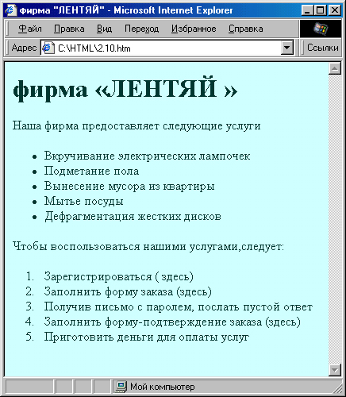
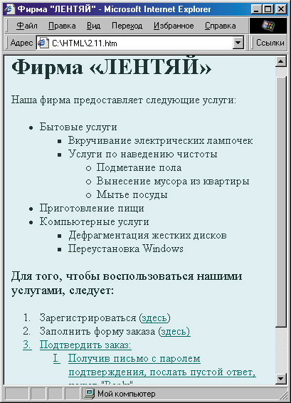
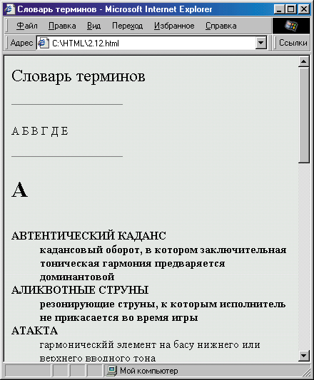

|
|
|
|
2.3. Как создать списки на веб-странице
Иногда при создании веб-страниц бывает полезно (а порой даже необходимо) как-то упорядочить представленную на них информацию. В традиционном языке HTML для этого применяют списки и таблицы. Более гибко это можно сделать с помощью каскадных таблиц стилей, однако сначало мы рассмотрим стандартные методы.
В качестве первого примера давайте рассмотрим веб-страницу гипотетической фирмы “Лентяй”. Допустим, мы сначала хотим перечислить предоставляемые услуги, а затем указать последовательность действий, необходимых для их заказа.
Маркированные и нумерованные списки
Перечисление услуг хорошо смотрится в виде маркированного списка. Для его организации применяется тег <UL> . Все, что находится между ним и его открывающим тегом ( </UL> ), считается маркированным списком. Каждый элемент списка должен быть при этом обозначен тегом <LI>. Этот тег можно употреблять без закрывающего (хотя можно и с ним). То есть, можно написать:
<LI>Вкручивание электрических лампочек или
<LI>Вкручивание электрических лампочек</LI>
И то и другое будет считаться элементом списка, и практически все броузеры интерпретируют эти записи корректно. Каждый элемент маркированного списка будет при просмотре отмечаться закрашенным кружком.
Что о касается перечисления порядка действий для заказа, то его целесооб- разно организовать в виде нумерованного списка. Для этого служит тег <OL> , а элементы списка также обозначаются тегом <LI> . И нумерованные, и маркированные списки в большинстве броузеров выделяются небольшим отступом. Итак, давайте посмотрим, как может выглядеть эта страничка.
<HTML>
<HEAD>
<TITLE> фирма "ЛЕНТЯЙ"</TITLE>
</HEAD>
<BODY BGCOLOR="#D2FFFF" TEXT="#003737" LINK="#006A6A"
VLINK="#006A6A" ALINK="#006A6A">
<DIV ALIGN""center"><H1> фирма «ЛЕНТЯЙ «</H1></DIV>
<FONT SIZE="+l">Haшa фирма предоставляет следующие услуги </FONT>
<UL> <li>Вкручивание электрических лампочек
<li>Подметание пола
<li>Вынесение мусора из квартиры
<li>Мытье посуды
<li>Дефрагментация жестких дисков </UL>
<FONT SIZE="+l">Чтобы воспользоваться нашими услугами,следует: </FONT>
<OL>
<li>Зарегистрироваться (<a HRЕF="#reg.html"> здесь</a>)
<li>Заполнить форму заказа
(<a HRЕF="forml.html">здесь</a>)
<li>Получив письмо с паролем, послать пустой ответ
<li>Заполнить форму-подтверждение заказа
(<a HRЕF="form2.html">здесь</a>)
<li>Приготовить деньги для оплаты услуг </OL>
</BODY>
</HTML>

Рис. 2.9. Применение маркированного и нумерованного списков
Результат показан на рис. 2.9. Как видите, мы здесь не употребляли закрывающий тег </LI> . Броузер обычно все равно понимает, где кончается элемент списка, поскольку после любого элемента стоит либо тег следующего элемента <U> , либо тег завершения списка </UL> или </OL>.
Другой вопрос, что будет, если код написан некорректно: например, указаны теги <LI> без тега списка <OL> или <UL> , или в списке есть элементы без тега <LI> ?
Вообще говоря, такого допускать не следует, так как некоторые “строгие” браузеры в этом случае не будут отображать практически ничего. Большинство популярных броузеров, правда, попытаются угодить даже автору странички, написавшему такой код. Например, Internet Explorer 5, если встретит теги <LI> без тега начала списка, интерпретирует их как маркирован ный список, хотя и не будет выделять его отступом, а не помеченные тегом <LI> элементы списка оставит без маркера. Однако, повторяю, это из ряда вон выходящие случаи.
Благодаря тому, что списки отображаются с отступом, легко можно организовывать вложенные списки с помощью тех же тегов. Для этого надо просто начать новый список внутри уже начатого. Схема расположения тегов списка при этом получится примерно такая:
<UL>
<UL>
<UL>
</UL>
</UL>
</UL>
Разумеется, отступы здесь обозначены только для наглядности — чтобы не перепутать, какой закрывающий тег к какому открывающему тегу относится. Далее, при вложении нескольких маркированных списков хочется каждый из них обозначить своим типом маркера. Некоторые броузеры так и делают по умолчанию. Например, Internet Explorer элементы первого списка из серии вложенных обозначает закрашенным кружком, элементы второго — незакрашенным кружком, а элементы всех следующих — квадратиком. Однако, во-первых, так поступают не все броузеры, а во-вторых, нам может захотеться изменить порядок маркеров. Для явного определения типа маркера в теге <UL> следует установить атрибут TYPE=. У него могут быть три значения: "disc", "square" и "circle", что означает, соответственно, закрашенный кружок, квадратик и незакрашенный кружок.
В теге нумерованного списка <OL> можно установить атрибут TYPE= для определения типа нумерации. Если не указано ничего или установлено значение TYPE="1", то нумерация происходит обычными цифрами. Если установить TYPE="I" или "i", то получится нумерацию римскими цифрами (соответственно, с использованием прописных или строчных букв).
И, наконец, для буквенных обозначений элементов списка устанавливают атрибут TYPE="A" или "а". Кроме того, иногда может потребоваться начать нумерацию не с единицы, а с какого-нибудь иного числа. Для этого существует атрибут START=. Например, запись <OL START="43"> вызовет нумерацию элементов списка, начиная с числа 43. Далее пойдут элементы с номерами 44, 45 и т. д.
Может возникнуть естественный вопрос: а как использовать другие типы маркеров списков — разнообразные галочки, цветные кружки и прочие, которые мы так часто видим в WWW,? Действительно, такая возможность есть, однако мы рассмотрим ее несколько позже, в разделе Si.3. А пока приведем пример веб-странички фирмы “Лентяй” с использованием вложенных списков:
<!DOCTYPE HTML PUBLIC "-//W3C//DTD HTML 4.0 Transitional//EN">
<HTML>
<head>
<title>Фирма "ЛЕНТЯЙ"</title>
</head>
<body BGCOLOR="#D2FFFF" TEXT="#003737" LINK="#006A6A"
VLINK="#006A6A" ALINK="#006A6A">
<DIV ALING="center"><H1>Фирма «ЛEHTЯЙ»</H1></DIV>
<FONT SIZE="+l">Haшa фирма предоставляет следующие услуги:
</FONТ>
<UL TYPE="disc">
<LI>Бытовые услуги
<UL TYPE="square">
<LI>Вкручивание электрических лампочек
<LI>Услуги по наведению чистоты
<UL TYPE="circle">
<LI>Подметание пола
<LI>Вынесение мусора из квартиры
<LI>Мытье посуды
</UL>
</UL>
<LI>Приготовление пищи
<LI>Компьютерные услуги
<UL TYPE="square">
<LI>Дефрагментация жестких дисков
<LI>Переустановка Windows
</UL>
</UL>
<FONT SIZE="+1">Для того, чтобы воспользоваться нашими услугами,
следует:</FONT>
<OL>
<LI>Зарегистрироваться
(<A HREF="reg.html">здесь</A>)
<LI>Заполнить форму заказа
(<A HREF="forml.htm1">здесь</А>)
<LI>Пoдтвepдить заказ:
<OL TYPE="I">
<LI>Получив письмо с паролем подтверждения, послать пустой ответ,
нажав "Reply"
<LI>Заполнить форму-подтверждение заказа
(<A HREF="form2.html">здесь</A>)
</OL>
<LI>Приготовить деньги для оплаты услуг
</OL>
</body>
</html>
Результат показан на рис .2.10. Между прочим, при желании можно изменить вид маркера даже у отдельного элемента списка. Для этого следует установить атрибут TYPE= у тега <LI> . Однако это не будет смотреться очень хорошо, за исключением специальных случаев.
Мы пока намеренно не приводим примеры того, что могло бы быть в файлах reg.html, form! .html и form2.html, на которые есть ссылки в этом примере. Списки определений
Теперь давайте рассмотрим совершенно иной пример. Допустим, у нас уже есть сайт, на котором используется довольно много терминов, и мы хотим сделать отдельную страничку, поясняющую их. Давайте попробуем организовать такую страничку-словарь, а заодно рассмотрим еще один вид HTML-списка. Кстати, впоследствии мы вполне сможем использовать эту страничку как шаблон для своего словаря терминов.
Итак, нам необходима страничка, организованная, как словарик. Это значит, что в ее начале целесообразно расположить алфавит, чтобы читатель, щелкнувший на какой-либо букве, мог тотчас попасть на соответствую-

Рис. 2.10. Применение вложенных списков
щее место в словаре. Для этого каждая буква алфавита должна быть оформлена как гиперссылка, например:
<A HREF="#BukvaV">B</A>
а в соответствующее место в словаре нужно не забыть поставить соответствующий якорь, например:
<A NAME="BukvaV">B</A>
Для улучшения наглядного отделения раздела одной буквы от другой выделим каждую букву словаря самым крупным шрифтом, используя тег <Н1> , а также введем разделительную горизонтальную черту. Поскольку словарь — вещь достаточно официальная и строгая, пусть наши горизонтальные разделители тоже примут строгий вид — для этого достаточно выровнять их не по центру, а по левому краю, и сделать относительно короткими, например, вот так:
<HR ALIGN="left" WIDTH="40%">
Кстати, цветовую схему нужно в этом случае выбрать тоже достаточно строгую. Можно вообще подать черные буквы на белом фоне, но в нашем примере мы решили все же чуть-чуть смягчить контраст.
Кроме того, читателю нужно предоставить возможность быстрого перемещения в любое место словаря. Вы скажете, что у нас уже есть для этого алфавит? Но ведь он расположен в верхней части страницы, а в поисках описаний терминов (кроме нескольких первых), пользователь неизбежно уйдет по страничке вниз и алфавит ему будет недоступен. Идеальный случай, когда алфавит все время виден сверху, а пока примем простое решение: время от времени (лучше всего в конце каждой буквенной рубрики) поставим небольшие (в смысле напечатанные мелким шрифтом) гиперссылки, ведущие наверх, к алфавиту:
<SMALL><A HREF="#Top">B начало</А></SMALL>
Теперь обсудим, как организовать объяснение терминов. Для этого в HTML предусмотрен тег <DL> . Все, что находится между ним и его закрывающей парой </DL> , считается списком определений. Внутри этого списка возможно применение тегов <DT> для выделения самих терминов и <DD> для их определений. Теги <DT> и <DD> могут использоваться без соответствующей закрывающей пары (сравните с рассмотренным ранее тегом <LI> ). Элементы, обозначенные как термины ( <DT> ), выводятся практически без отступа, а элементы, обозначенные как определения ( <DD> ) — с довольно большим отступом. Ни те, ни другие элементы не маркируются.
На наш взгляд, хорошо бы еще элементы-термины выделять, например полужирным начертанием. Некоторые броузеры так и делают, однако большинство — нет. Поэтому в нашем примере мы сами на всякий случай заботимся об этом, заключая каждый термин между тегами <В>...</В>.
Итак, приведем пример странички-словаря терминов. Для экономии места алфавит здесь обрывается на букве “Е”. Далее его легко можно продолжить самостоятельно (а если терминов много, то, возможно, стоит его продолжить в другом файле, чтобы не заставлять пользователя ждать загрузки слишком большого файла с сервера). Более того, здесь заполнены только разделы на буквы “А” и “Б”, чего для примера вполне достаточно.
<!DOCTYPE HTML PUBLIC "-//W3C//DTD HTML 3.2 Final//EN">
<HTML>
<HEAD>
<TITLE>Словарь терминов</TITLE>
<META HTTP-EQUIV="CONTENT-TYPE" CONTENT="text/html;charset=windows-1251">
</HEAD>
<BODY BGCOLOR="#EAEAEA" TEXT="Black" LINK="#7A3F51" VLINK="#7A3F51" ALINK="#7A3F51">
<H1><A NАМЕ="Тор">Словарь терминов</А></Н1>
<HR ALIGN="left" WIDTH="40%">
<BR>
<А HREF=="#BukvaA">A</A>
<А HREF="#BukvaB">Б</A>
<А HREF="#BukvaV">B</A> <А HREF="#BukvaG">Г</A>
<А HREF="#BukvaD">Д</A> <А HREF="#BukvaE">E</A> </НR>
<HR ALIGN="left" WIDTH="40%">
<H1><A NAME="BukvaA">A</A></H> <DL>
<DT><A NAME="avtentich"><B>ABTEHTИЧECKИЙ КАДАНС</В></А>
<DD>кадансовый оборот, в котором заключительная тоническая гармония предваряется доминантовой
<DT><A NAME="aliquot"><B>AЛИKBOTHЫE СТРУНЫ</В></А>
<DD>резонирующие струны, к которым исполнитель не прикасается во время игры
<DT><A NAME="atakta"><B>ATAKTA</B></A>
<DD>гармоническйй элемент на басу нижнего или верхнего вводного тона
</DL>
<SMALL><A HREF="#Top">B начало</А></SMALL>
<HR ALIGN="left" WIDTH="40%">
<H1><A NAME="BukvaB">B</A></H1> <DL>
<DT><A NAME="bagatel"><B>БАГАТЕЛЬ</B></A>
<DD>небольшая нетрудная для исполнения пьеса
<DT><A NAME="bartok"><B>БAPTOKOBCKOE ПИЦЦИКАТО</В></А>
<DD>сильный щипок струны с последующим ударом струны о гриф
<DT><A NAME="bonang"><B>БOHAHГ</B></A>
<DD>Ha6op из 10-12 гонгов разного размера </DL>
<SMALL><A HREF="#Top">B начало</А></SMALL>
<HR ALIGN="left" WIDTH="40%">
<H1><A NAME="BukvaV">B</A></Hl>
<DL>
</DL>
<SMALL><A HREF=<"#Top">B начало</А></SMALL>
<HR ALIGN="left" WIDTH="40%">
<H1XA NAME=<"#BukvaG">Г</A></H1>
<DL>
</DL> <SMALL><A HREF="#Top">B начало</А></Small>
<HR ALIGN="left" WIDTH="40%">
<H1><A NAME=="#BukvaD">A</A></H1> <DL>
</DL>
<SMALL><A HREF="#Top">B начало</А></Small>
<HR ALIGN="left" WIDTH="40%">
<H1><A NAME="BukvaE">E</A></Hl> <DL>
</DL>
</DL>
<SMALL><A HREF="#Top">B начало</А></Small>
</BODY>
</HTML>
Результат показан на рис. 2.11. Как видите, все достаточно строго и наглядно. Кстати, обратите внимание на то, что каждый термин мы также оформили как якорь. Это сделано для того, чтобы с других страниц нашего предполагаемого сайта можно было ссылаться непосредственно на объяснение этого термина. Например, если наш файл-словарь терминов называется glossary, html, то в каком-нибудь другом файле на этом сайте мы можем написать приблизительно следующее:
...характеризуется частым использованием
<А HREF="glossary.html #bartok">6apтоковскoгo пиццикато</А>, а
также приемов типа постукивания по декам и обечайке...
В этом случае, пользователь, читающий этот текст и не понявший смысл термина бартоковское пиццикато может щелкнуть на нем и попасть в

Рис. 2.11. Использование списка терминов
соответствующий раздел словаря терминов, причем не куда-нибудь, а точно в то место, где этот термин поясняется.
Если вы внимательно просмотрели последний листинг, то, вероятно, заметили еще одну строку, значение которой ранее не пояснялось:
<META HTTP-EQUIV="CONTENT-TYPE" CONTENT="text/html; charset=windows-1251">
Здесь применен тег < МЕТА> . Он может, вообще говоря, использоваться для ввода различной дополнительной информации: ключевых слов, описания
веб-страницы, указания ее автора, программы-генератора и т. п. Но в дан- ном случае этот тег используется для определения кодировки символов. Поскольку в тексте используются русские буквы, то есть, символы с ASCII-кодами, большими 128, необходимо указать, в какой кодировке эти символы нужно отображать. Если кто не совсем понял, о чем речь, тому можно это место пропустить, но лучше обратиться к соответствующей литературе. Большинство броузеров обычно это делают автоматически, и кроме того, имеют встроенную возможность выбора кодировки. Как правило она находится в меню View (Вид). Однако иногда бывает полезно указать кодировку в явном виде.
В данном случае мы имеем дело с файлом в кодировке Windows, поэтому в качестве значение свойства charset указано "windows-1251". Кстати, если вы работаете в другой кодировке, например, KOI8, вам следует ввести другое значение — "koi8-r", иначе эта страничка будет нечитаемой.
К сожалению, для явного указания кодировки приходится использовать столь длинный тег. Правда, многие броузеры сейчас начинают понимать и просто указание “без лишних слов”: <МЕТА CHARSET="windows-1251"> . Однако этот метод не универсален, поэтому для лучшей совместимости стоит всегда писать длинную строку, приведенную выше.
|
|
|
|